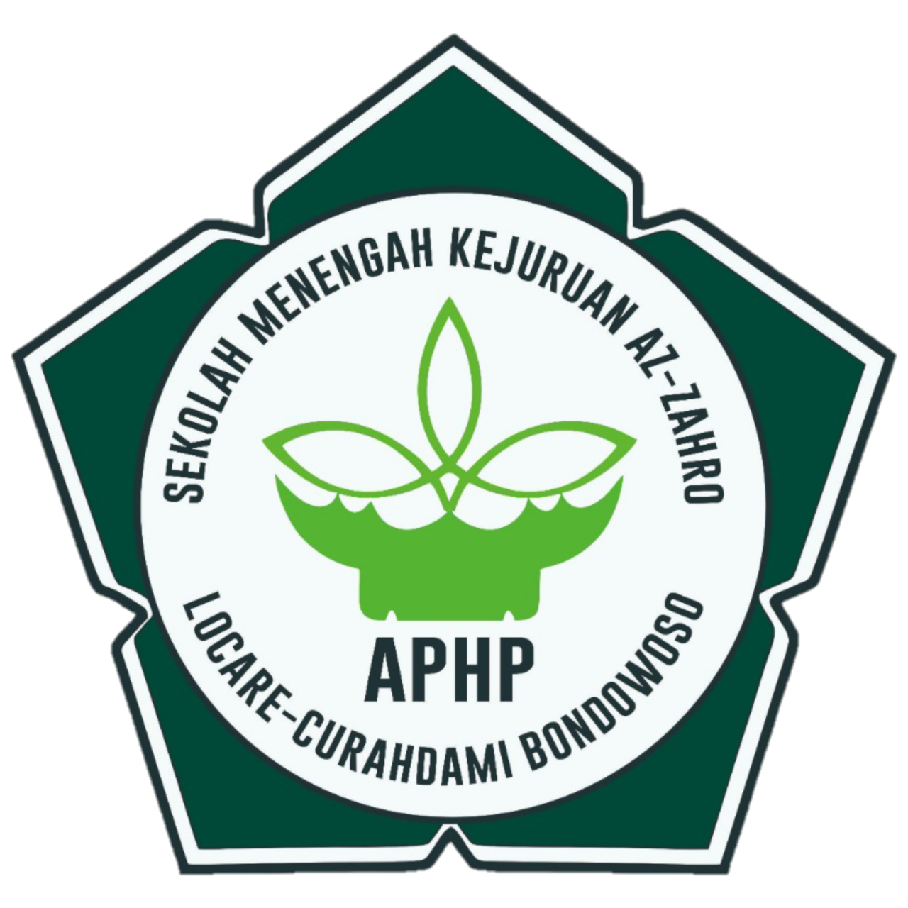

REAL COUNT PANITIA
SMK AZ-ZAHRO
Data rekapitulasi suara berdasarkan DPT Siswa yang sah.

0
Paslon 01

0
Paslon 02

0
Paslon 03
📊
0
Total Suara Masuk
Persentase Perolehan Suara
Paslon 01 - Putri Ayu Lestari
Paslon 02 - Rizki Hidayat
Paslon 03 - Lilis Cintya Ningsih